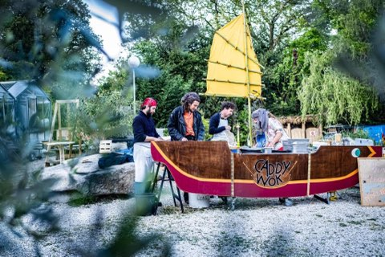
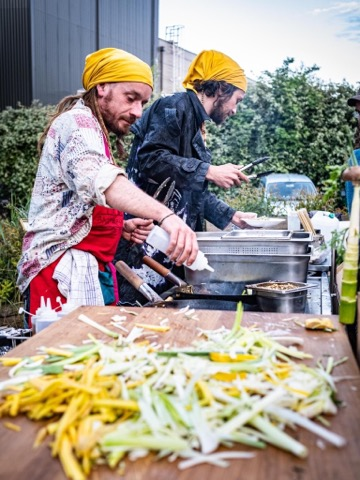
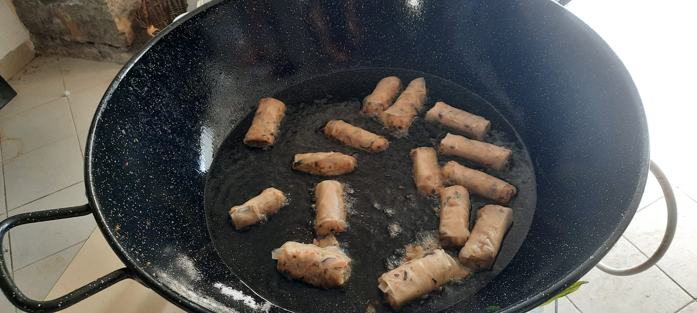
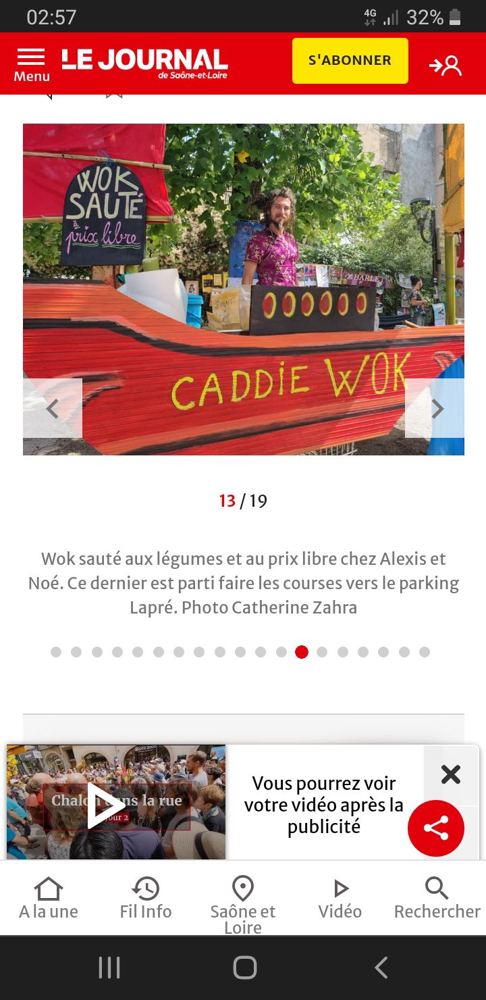

Cuisine mobile sur chariots de courses spécialisé en wok sauté au légumes de saison.
Et toutes un tas d'autres spécialités...Pour contacter le caddy wok:
Alexis 0686349640
Noé 0656668771
Les caddy wok c'est:
Des légumes prêt a cuire

Des nouille de riz sauté prix libre !

Et qui saute

Des nems car ça fait plaisir

Des parutiuon dans le journal:

Y s'y sont passer
RokakwaChapeau melon et botte de QUEER
Chalon dans la rue
Ces membres y ont déjà cuisiné
Pas de cotéBizz'art nomade
Le gros bal en Vercor
La purée dur
Mézilhac Attac
Le mouline'art
Les état généraux du film documentaire d'auteur
Karnaval humanitaire
et bien d'autres encore...